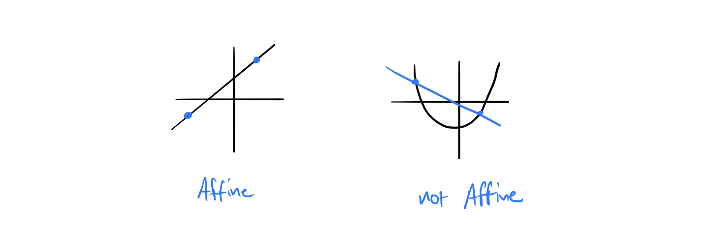
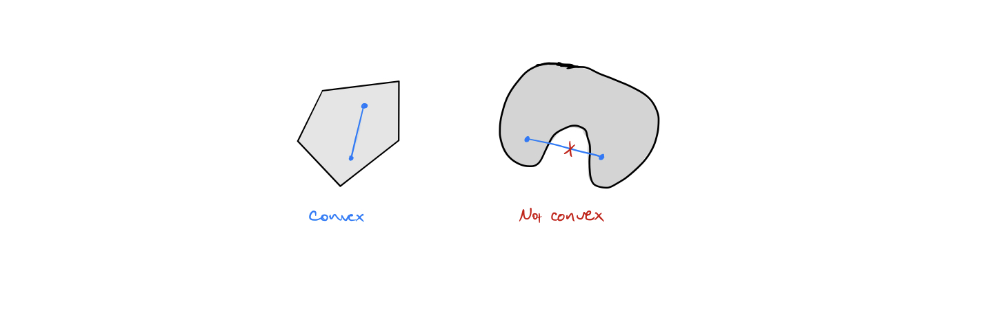
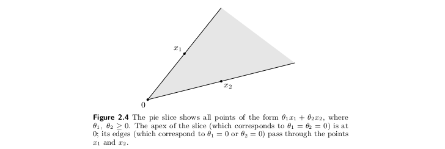
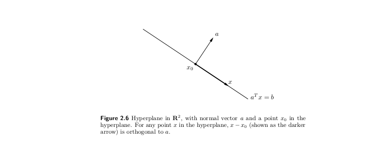
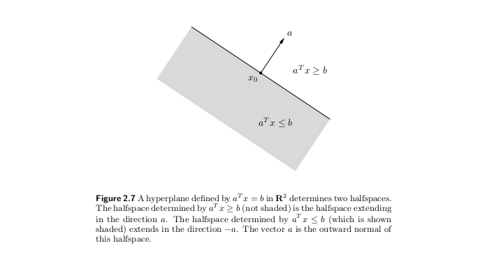
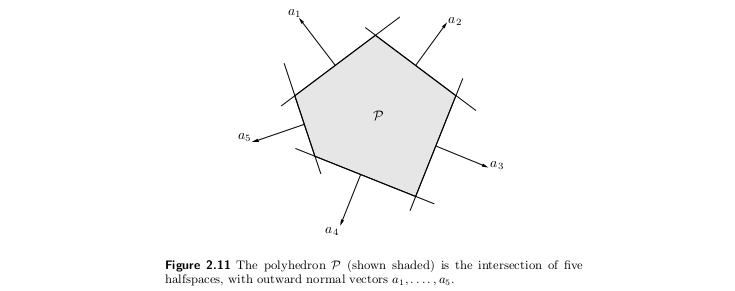
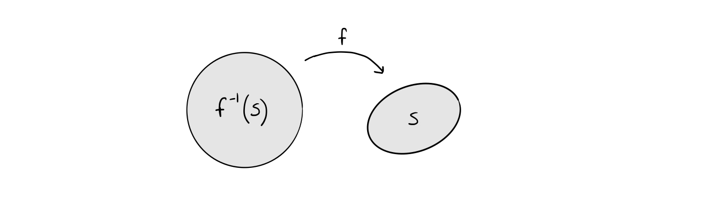
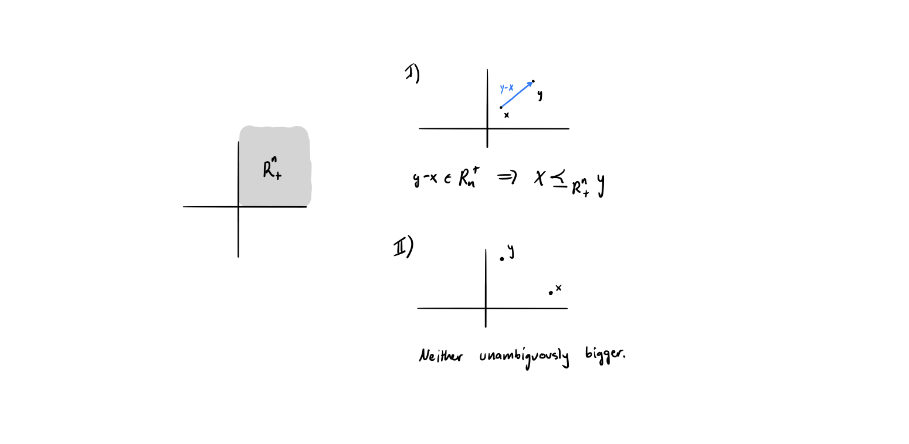
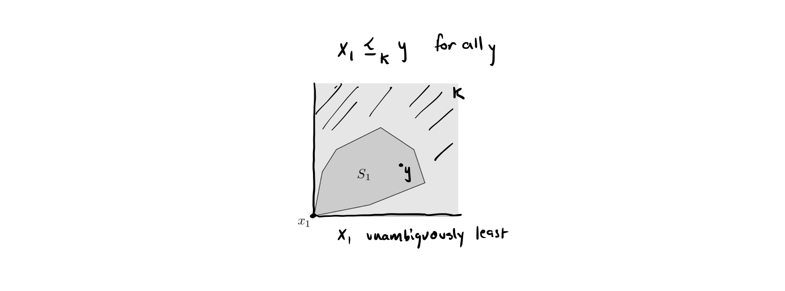

[1]:
import numpy as np
import matplotlib.pyplot as plt
2.1.3. Convex sets¶
2.1. Affine and convex sets¶
2.1.1. Lines and line segments¶
Let \(x_1, x_2\) be points in \(\mathbb{R}^n\). We can think of a line segment as
\begin{equation} y = \theta x_1 + (1-\theta) x_2 \label{eq:line_seg} \end{equation}
where \(\theta\) is a parameter that varies on \([0,1]\). Allowing \(\theta\) to vary outside that range sweeps out a line.
[2]:
θ = np.linspace(0,1,50)
x1, x2 = np.array([1., 2]), np.array([-1, -3])
pts = x1*θ[:,None] + (1-θ[:,None])*x2
# plot result
fig, ax = plt.subplots(1, 1, figsize=(4,3))
plt.scatter(pts[:,0], pts[:,1], c=θ)
plt.colorbar()
plt.title(r'$\theta$ in $\theta x_1 + (1-\theta)x_2$')
plt.show()
2.1.2. Affine sets¶
Definition
Loosely, a set \(C\) is affine if the entire line through any two points in \(C\) lies in \(C\).
Formally, a set \(C\subseteq\mathbb{R}^n\) is affine if, for any \(x_1, x_2 \in \mathbb{R}^n\) and \(\theta\in\mathbb{R}\), the set \(\theta x_1 + (1-\theta)x_2 \in C\)

Related concept: affine combination
A point of the form \(\theta_1 x_1 + \ldots + \theta_k x_k\) where \(\theta_1 + \ldots + \theta_k = 1\) is called an affine combination of the points \(x_1,\ldots,x_n\).
Our check for an affine set was to see whether for any two points \(x_1, x_2 \in C\),
\[\theta x_1 + (1-\theta)x_2\]is also in \(C\); since \(\theta + (1-\theta) = 1\). So this is a generalization that extends to \(k\) points.
2.1.3. Convex sets¶
Definition: - Loosely, a set \(C\) is convex if the line segment between any two points in \(C\) also lies in \(C\). - Geometrically, for any two points in a set, if the line segment connecting them always lies in the set, the set is convex. - Formally, for any \(x_1,x_2\in C\) and any \(\theta\) with \(0\leq\theta\leq1\), the point \(\theta x_1 + (1-\theta)x_2 \in C\).

Similarly, a point \(\theta_1 x_1 + \ldots \theta_k x_k\) where \(\theta^T \mathbf{1} = 1\) (slight abuse of notation, where we consider all \(\theta_i\) as a vector) and \(\theta_i \geq 0\), is called a convex combination of the points \(x_1, \ldots, x_k\).
by choosing some points \(x_1, x_2, x_3, x_4\) and appropriate \(\theta\), we can sweep out what the convex combination looks like.
[3]:
# choose 4 points in R^2
x = np.array([[1, 1 ],
[2, 1 ],
[1.5, 2 ],
[1.7, 0.7]])
n = 10000
pts = np.zeros((n, 2))
for i in range(n):
θ = np.random.random(4)
θ *= 1/np.sum(θ) # ensure sum to 1
pts[i,:] = np.dot(θ.T, x)
[4]:
fig, ax = plt.subplots(1,1,figsize=(4,4))
ax.scatter(pts[:,0], pts[:,1])
ax.scatter(x[:,0], x[:,1], c='k')
ax.set_title(r'{} convex combinations of $x_k$'.format(n))
plt.show()
We see that it’s sweeping out the interior region defined by the four points. Continuing to make this plot for arbitrarily many convex points would give the convex hull of the points \(x_k\).
Formally, the convex hull of a set \(C\), \(\text{conv }C\) is the set of all convex combinations of the points in \(C\)
Examples of convex sets
The empty set \(\emptyset\) is convex
Any singleton set \(\{x_0\}\) is convex
Any line is affine, hence convex
Any line segment is convex, but not affine (unless it’s a single point)
A ray is convex
Any subspace is affine (and, in fact, a convex cone)
The outer product of two convex sets is convex.
Let \(S\) and \(T\) be convex sets and take \(\theta\in [0,1]\). Let \((x_1,y_1),\, (x_2,y_2)\) be arbitrary points in \(S\times T\). Then \(x_1, x_2 \in S\); and since \(S\) is convex, \(\theta x_1 + (1-\theta)x_2 \in S\). Similarly, \(y_1, y_2 \in T\), and \(\theta y_1 + (1-\theta) y_2 \in T\). Therefore
\begin{equation} \left(\theta x_1 + (1-\theta)x_2,\, \theta y_1 + (1-\theta)y_2\right) \in S \times T. \end{equation}
and , which shows that \(\theta(x_1,y_1) + (1-\theta)(x_2,y_2) \in S\times T\) and the outer product is convex.
Show that a set is convex if and only if its intersection with any line is convex. Show that a set is affine if and only if its intersection with any line is affine.
We only prove the convex part.
proof.
\((\Rightarrow)\) Suppose that a set \(C\) is convex. Let the set \(L\) represent an arbitrary line. If the intersection is the empty set \(\emptyset\), we are done (since the empty set is convex), so suppose the intersection \(C \cap L\) is non-empty. Let \(x_1, x_2 \in C \cap L\), which implies that \(x_1, x_2 \in C\) and the intersection is convex.
\((\Leftarrow)\) Suppose that the intersection of any line with a set \(C\) is convex. Choose any \(x_1, x_2 \in C\). Then the line segment \(LS = \theta x_1 + (1-\theta) x_2\) with \(0\leq \theta\leq 1\) represents a convex subset of the intersection of the line \(\theta x_1 + (1-\theta)x_2\) with \(\theta\in\mathbb{R}\), hence all points in \(LS\) lie in \(C\). Since choice of \(x_1, x_2\) was arbitrary, our conclusion holds for any \(x_1, x_2\) and we have that \(C\) is convex.
2.2. Cones¶
Definition:
A set \(C\) is called a cone if for every \(x\in C\) and \(\theta\geq 0\) we have that \(\theta x \in C\).
this implies that every cone contains \(0\) by choosing \(\theta=0\).
if you take vector pointing to any \(x \in C\), all points from the origin to \(x\) are in the cone.
Convex cones
A set \(C\) is a convex cone if it is convex and a cone; namely, for any \(x_1, x_2 \in C\) and \(\theta_1, \theta_2 \geq 0\), we have that \(\theta_1 x_1 + \theta_2 x_2 \in C\).

Example: positive semidefinite cone
We use \(\mathbf{S}^n\) to denote the set of symmetric \(n\times n\) matrices. The set \(\mathbf{S}^n_+ = \left\{X\in \mathbf{S}^n \mid X \succeq 0 \right\}\) is the set of symmetric positive semidefinite matrices, that is
\begin{equation} X\in \mathbf{S}^n_+ \iff z^T X z \geq 0 \; \text{ for all } z \end{equation}
This is a convex cone. If \(\theta_1,\theta_2\geq 0\) and \(A,B\in \mathbf{S}^n_+\), then
\begin{equation} z^T\left(\theta_1 A + \theta_2 B\right)z = \theta_1\underbrace{ z^T A z}_{\geq 0} + \theta_2\underbrace{ z^T B z}_{\geq 0} \geq 0 \end{equation}
and we have shown convexity.
Non-convex cones
Can cones be non-convex? Yes, because the strict definition of a cone can specify a “shell” of a cone or a bidirectional cone, both of which violate convexity. Roughly, if a cone is one-directional and contains its interior, then it’s a convex cone. Below are two examples of non-convex cones: the union of opposing quadrants in \(\mathbb{R}^2\) and the graph of \(|x|\).
Conic hulls
A point \(\theta_1 x_1 +\ldots + \theta_k x_k\) with \(\theta_1,\ldots,\theta_k \geq 0\) is called a conic combination of the points \(x_i\).
Similarly to an convex hull, we can define the conic hull of a set \(C\) as the set of all conic combinations of points in \(C\),
Intuitively, the conic hull is the convex cone which encloses the set \(C\).
2.3. Hyerplanes and halfspaces¶
Hyperplanes
a hyperplane is a set of the form \(\{x\,|\, a^T x = b\}\) where \(a, x\in \mathbb{R}^n\) and where \(b\in \mathbb{R}\).

There are a few geometric interpretations of the hyperplane \(\{x\,|\, a^T x = b\}\)
if \(b=0\), then this is the set of all vectors that are orthogonal to \(a\); that is, the solution can be thought of as the plane defined by the normal vector \(a\).
if \(b\neq 0\), then the plane in the \(b=0\) case is offset from the origin to the y-intercept.
We can think of it like
\begin{equation} \{x\,|\, a^Tx - b = 0\} = \{x \,|\, a^T(x - x_0) = 0\}, \end{equation}
where \(x_0\) is any vector such that \(a^T x_0 = b\). This makes sense, because any element of the original offset hyperplane can be subtracted to recover the hyperplane passing through the origin.
The perpendicular offset of the origin \(d\) can be computed by noting that the vector \(\mathbf{0} + da\) lies on the hyperplane. Hence
Halfspaces
A hyperplane divides \(\mathbb{R}^n\) into two halfspaces. A (closed) halfspace is a set of the form
\begin{equation} \left\{x \mid a^T x \leq b\right\} \end{equation} where \(a\neq 0\). Halfspaces are convex but not affine.

A halfspace is not a vector space. It is not closed under scalar multiplication.
2.4. Polyhedra¶
A polyhedron is the solution set of a finite number of linear inequalities and equalities.
\begin{equation} \mathcal{P} = \left\{x \mid a_j^Tx \leq b_j,\; j=1,\ldots,m, \; c_j^T x = d_j, \; j=1,\ldots,p\right\} \label{eq:polylong} \end{equation}
Instead of using (\ref{eq:polylong}), it will be convenient to use the notation
\begin{equation} \mathcal{P} = \left\{Ax \preccurlyeq b,\; Cx = d\right\} \label{eq:polyshort} \end{equation}

2.5. Convexity preserving operations¶
2.5.1. Intersections¶
The intersection of any number of convex sets is convex.
Which of the following sets are convex?
A slab, i.e., a set of the form \(\left\{x \in \mathbf{R}^n \mid \alpha\leq a^T x \leq \beta\right\}\).
A slab is the intersection of two halfspaces, and is therefore convex.
A rectangle, i.e., a set of the form \(\left\{x \in \mathbf{R}^n \mid \alpha_i \leq x_i \leq \beta_i,\, i=1,\ldots,n\right\}\).
This is also the intersection of halfspaces, one for each boundary of the rectangle. Therefore it is also convex, and also a polyhedron.
A wedge, i.e., \(\left\{x\in \mathbf{R}^n\mid a_1^T x \leq b_1,\, a_2^T x \leq b_2\right\}\).
This is again the intersection of two halfspaces and is therefore convex as well as a polyhedron.
The set of points closer to a given point than a given set, i.e.,
where \(S\subseteq \mathbf{R}^n\).
For each point \(y \in S\), the set of points closer to \(x_0\) than to \(y\) defines a halfspace. Take the intersection of all these halfspaces (possibly uncountably infinite intersections) and convexity is preserved. The set is convex.
2.5.2. Affine functions¶
A function \(f\colon \mathbf{R}^n\to \mathbf{R}^m\) is affine if it is a sum of a linear function and a constant, i.e., if it has the form \(f(x) = Ax +b\) where \(A\in \mathbf{R}^{m\times n}\) and \(b\in \mathbf{R}^m\).
Affine functions preserve convexity, which means:
The image of a convex set \(C\subseteq \mathbf{R}^{n}\) under an affine mapping \(f\) is convex.
\begin{equation} C \subseteq \mathbf{R}^{n} \text{ convex } \Rightarrow f(C) = \left\{f(x) \mid x \in C \right\} \text{ is convex} \end{equation}
It also works in reverse. The inverse image \(f^{-1}(S)\) of a convex set under \(f\) is convex.
\begin{equation} S \subseteq \mathbf{R}^{m} \text{ convex } \Rightarrow f^{-1}(S) = \left\{x\in \mathbf{R}^{n} \mid f(x) \in S \right\} \text{ is convex } \end{equation}

We can actually get quite a bit of mileage out of this simple result.
Examples
Solution set of a linear matrix inequality
Suppose we have matrices \(B, A_i \in \mathbf{S}^m\), for \(i=1,\ldots,n\) and \(x\in \mathbf{R}^n\). A linear matrix inequality is the condition
\begin{equation} A(x) = x_1 A_x + \ldots + x_n A_n \preceq B \end{equation}
We can show that the solution set, \(\left\{x \mid A(x) \preceq B\right\}\) is convex by using an affine function argument. If \(A(x) \preceq B\) then \(B- A(x) \succeq 0\), which means that \(B - A(x) \in S_+^m\). We define a new function \(f(x) = B - A(x)\), which is affine, and the set \(S^m_+\) is convex. So
\begin{align} f^{-1}(S^m_+) &= \left\{x\in \mathbf{R}^{n}\mid f(x) \in S^m_+\right\}\\ &= \left\{x\in \mathbf{R}^{n}\mid B - A(x) \succeq 0\right\} \\ &= \left\{x\in \mathbf{R}^{n}\mid A(x) \preceq B\right\} \end{align}
and the solution set of the LMI is convex since it is the inverse image of an affine function on a convex set.
2.5.3. Linear-fractional and perspective functions¶
Convexity is also preserved under two special types of functions:
Perspective function
The perspective function \(P:\mathbf{R}^{n+1}\to \mathbf{R}^{n}\) is defined as
\begin{equation} P(x,t) = x/t, \qquad \mathbf{dom} P = \left\{(x,t) \mid t > 0\right\} \end{equation}
Intuitively, this function divides all entries of a vector by the last entry and removes the last entry. There is a domain restriction that the last entry \(t\) be strictly positive. The image and inverse image of a convex set under the perspective function is convex.
Linear-fractional function
The linear-fractional function \(f:\mathbf{R}^{n}\to \mathbf{R}^{m}\) is a generalization of the perspective function.
\begin{equation} f(x) = \frac{Ax + b}{c^T x + d}, \qquad \mathbf{dom} f = \left\{x \mid c^T x + d > 0 \right\} \end{equation}
Just like the perspective function, there is a domain restriction where the denominator must be positive. The image and inverse image of a convex set under the perspective function is also convex.
Both the perspective function and linear-fractional functions preserve convexity
2.6. Generalized inequalities¶
A generalized inequality is defined by a proper cone \(K\).
\begin{equation} x \preceq_K y \iff y-x \in K, \end{equation}
and it’s strict equivalent, that
\begin{align} x \prec_K y \iff y-x \in \mathbf{int} K. \end{align}
Examples:
Componentwise inequality (\(K = \mathbf{R}^{n}_+\))
\begin{equation} x\preceq_{\mathbf{R}^{n}_+} y \iff x_i \leq y_i, \; i=1,\ldots,n \end{equation}
The mental picture is:

The thing to be careful about with generalized inequalities is that they do not necessarily specify a total ordering. It may not be possible to definitively say for two points \(x,y\) which one is bigger.
Matrix inequality (\(K = \mathbf{S}^n_+\))
\begin{equation} X\preceq_{\mathbf{S}^n_+} Y \iff Y - X \text{ positive semidefinite } \end{equation}
2.6.1. Minimum and minimal elements¶
As was mentioned above, \(\preceq_K\) is not in general a linear ordering. We can have both that \(x \npreceq_K y\) and \(y \npreceq_K x\). However, since \(K\) does create an ordering, we have a notion of a minimum element.
A point \(x\in S\) is the minimum element of \(S\) with respect to \(\preceq_K\) if
\begin{equation} y \in S \implies x \preceq_K y \end{equation}
A point \(x\in S\) is a minimal element of \(S\) with respect to \(\preceq_K\) if
\begin{equation} y\in S,\, y \preceq_K x \implies y =x \end{equation}
Examples with \(K=\mathbf{R}^{2}_+\)
a minimum element

In the example above, the cone \(\mathbf{R}^{2}_+\) shows all elements that are unambiguously larger than \(x_1\). We see that \(x\) is the minimum element of \(S_1\), since it is unambiguously the least element in the set.
a minimal element
Here \(x_2\) is not a minimum element. For example, \(x_2\) is not unambiguously less than \(y\). However, it is a minimal element of \(S_2\), because there is no point that is unambiguously less than or equal to \(x_2\) (other than itself).
Example with a different cone
In this modified example with a new cone \(K\), \(x_1\) is a minimal element but not the minimum because the set \(S\) does not lie entirely within the cone.
In general, a good way of thinking of this is: if a point is a minimum element means that all points are more, a minimal element means that no points are less.
2.7. Dual cones and generalized inequalities¶
2.7.1. Dual cones¶
The dual cone of a cone \(K\) is the set
\begin{equation} K^* = \left\{y \mid y^T x \geq 0 \text{ for all } x \in K\right\} \end{equation}
Mental image:
Examples of dual cones
\(K\) is a subspace
The dual cone of a subspace \(V \subseteq \mathbf{R}^{n}\) (which is a cone) is its orthogonal complement \(V^{\perp} = \left\{y \mid v^T y = 0 \text{ for all } v \in V\right\}\).
nonnegative orthant
The dual cone of \(\mathbf{R}^{n}_+\) is itself, because the set of all \(y\) such that
\begin{equation} x^T y \geq 0 \text{ for all } x \succeq 0 \iff y \succeq 0. \end{equation}
(This type of cone is called a self-dual cone.)
\(K\) is a halfspace
\(K\) is a line
\(K = \mathbf{R}^2\)
\begin{equation} K^* = \left\{\mathbf{0}\right\}. \end{equation}
(Special case of subspace)
Properties of dual cones
Dual cones are always closed and convex.
Dual cones of proper cones are proper, and hence define generalized inequalities
\begin{equation} y \succeq_{K^*} 0 \iff y^T x \geq 0 \text{ for all } x \succeq_K 0 \end{equation}
2.7.2. Dual generalized inequalities¶
2.8. Exercises¶
Let \(C\subseteq \mathbf{R}^n\) be a convex set, with \(x_1,\, \ldots,x_k\in C\) and let \(\theta_1 + \ldots + \theta_k=1\). Show that \(\theta_1 x_1 + \cdots + \theta_k x_k \in C\). (The definition of convexity is that this holds for \(k=2\), you must show it for arbitrary \(k\)). Hint. Use induction on \(k\).
proof. In the base case for \(k=1\), \(x_1\in C\) since all \(x_i \in C\). Now suppose that the claim holds true for \(n=k-1\), that is, that
Now the question is if \(x = \sum_{i=1}^{k} \theta_i x_i\) is also in \(C\). If \(\theta_k = 1\), we are done (since \(x_k \in C\) and all other \(\theta_i = 0\)), so suppose that \(\theta_k \neq 1\). Note that
(importantly, \(s\neq0\)) and re-write the sum
where \(x^\prime \in C\), since \(\sum_{i=1}^{k-1}\frac{\theta_i}{s} = 1\) (adding each portion of the sum \(s\)) and since we assumed the claim for \(n=k\). Then since \(x^\prime, x_k \in C\), and \(C\) is a convex set, we have that \(x\in C\), which completes the proof by induction.
Show that a set is convex if and only if its intersection with any line is convex. Show that a set is affine if and only if its intersection with any line is affine.
We only prove the convex part.
proof.
\((\Rightarrow)\) Suppose that a set \(C\) is convex. Let the set \(L\) represent an arbitrary line. If the intersection is the empty set \(\emptyset\), we are done (since the empty set is convex), so suppose the intersection \(C \cap L\) is non-empty. Let \(x_1, x_2 \in C \cap L\), which implies that \(x_1, x_2 \in C\) and the intersection is convex.
\((\Leftarrow)\) Suppose that the intersection of any line with a set \(C\) is convex. Choose any \(x_1, x_2 \in C\). Then the line segment \(LS = \theta x_1 + (1-\theta) x_2\) with \(0\leq \theta\leq 1\) represents a convex subset of the intersection of the line \(\theta x_1 + (1-\theta)x_2\) with \(\theta\in\mathbb{R}\), hence all points in \(LS\) lie in \(C\). Since choice of \(x_1, x_2\) was arbitrary, our conclusion holds for any \(x_1, x_2\) and we have that \(C\) is convex.
What is the distance between two parallel hyperplanes \(\left\{x \in \mathbf{R}^n \mid a^T x = b_1\right\}\) and \(\left\{x \in \mathbf{R}^n \mid a^Tx = b_2\right\}\)?
note: should actually be \(|b_2 - b_1|\) to be general
Voronoi description of halfspace. Let \(a\) and \(b\) be distinct points in \(\mathbf{R}^n\). Show that the set of all points that are closer (in Euclidean norm) to \(a\) than to \(b\), i.e., \(\left\{x \mid \left\Vert x - a\right\Vert_{2}^{} \leq \left\Vert x - b\right\Vert_{2}^{} \right\},\) is a halfspace. Describe it as an inequality of the form \(c^T x \leq d\). Draw a picture.
[ ]: